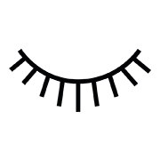

EXTENSIONES DE PESTAÑAS

Las #superpestañas
No todas las extensiones son iguales. La filosofía de Lashes Venecia se basa en ofrecer siempre un resultado espectacular para que el antes y después se note de verdad. Lashes Venecia ofrece un servicio integral y personalizado para hacer tu mirada más atractiva y seductora.
La sesión completa de colocación extensiones dura entre hora y media y tres horas dependiendo del tipo de extensión que se escoja (1D, 2D, 3D o 5D). El tratamiento se realiza en una cabina individual y el proceso es completamente indoloro, de hecho es tan relajante que muchas clientas se quedan dormidas. Se colocan una media de 100 extensiones en cada ojo, una a una, de forma manual. Los resultados se mantienen más o menos un mes. Aconsejamos una reposición cada tres o cuatro semanas para que el efecto sea duradero.
LA TÉCNICA
La técnica, cuando se hace bien, no daña en absoluto las pestañas naturales. Esta consiste en colocar una o varias extensiones de pestaña por cada una de tus pestañas naturales hasta completar el 100% de todas ellas. Las extensiones de pestañas se colocan con unas pinzas especiales y un pegamento médico de larga duración, que se aplica a una distancia mínima de la piel. Las extensiones son ligeras, tienen un peso similar a la máscara de pestañas. Con la caída natural de tus pestañas, caerán consecuentemente algunas extensiones, y esa es la razón por la que se aconseja una reposición cada tres o cuatro semanas.
LOS CENTROS LASHESVENECIA
Los centros Lashesvenecia tienen un diseño minimalista, moderno y una línea de decoración basada en el cristal y la madera. En ninguno faltan las pizarras llenas de color, los vinilos exteriores, las cabinas individuales, el sillón de pedicura, las mesas de manicura... ¡Y el fantástico sofá chester de Lashesvenecia!
Staff

Hola me llamo Valentina Arcos, tengo 27 años, me dedico a lo que son las pensatañas y a su enseñansa,
soy
la que fundo Lashesvenecia junto a mi hermana, y espero que les guste nuestros servicios
Hola me llamo Rocio Eugenia Arcos, tengo 37 años, me dedico a lo que son las pensatañas y a su enseñansa
Hola me llamo Franco Manuel Gomez, tengo 18 años y este sitio web fue crea por mi,
me dedico al
desarrollo web, y espero
que sitio sea de su gusto y se pueden contactar conmigo
atra vez de los metodos de comunicacion que
ahi
en le sitio web.